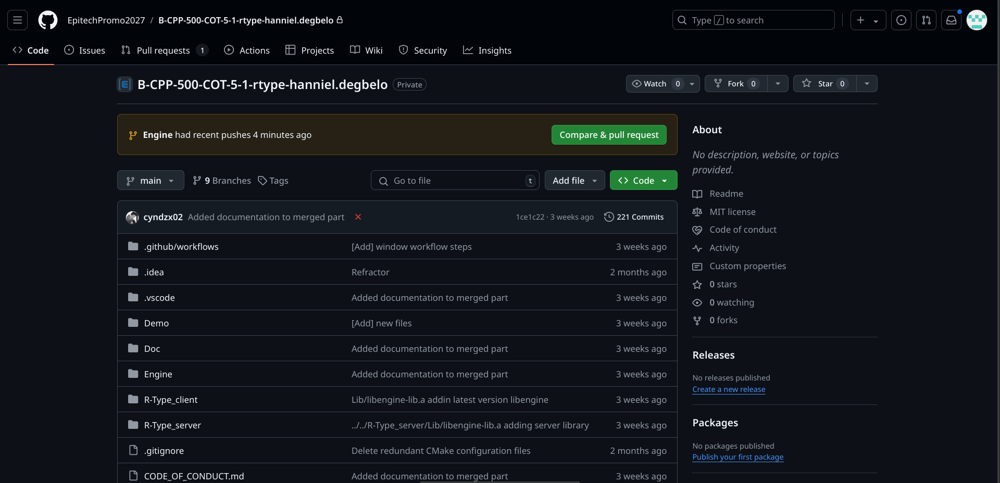
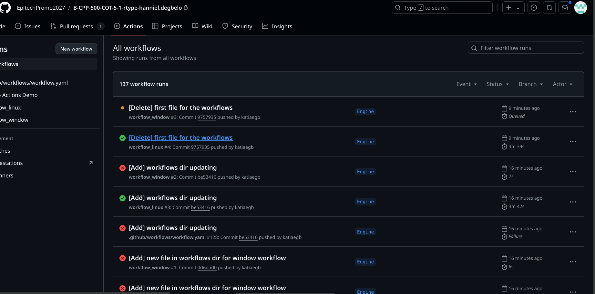

CI/CD How-To’s
This document describes a GitHub Actions workflow used to automate the building of our R-type project on a Fedora image. The workflow is triggered by push and pull request events on the main and Engine branches.
Workflow structure
The YAML file is structured in several sections:
The name
name: workflow_linux
-This line defines the workflow name. Here, it is simply called workflow.
The events triggers
on: push: branches: - main - Engine pull_request: branches: - main - Engine
- This section defines the events that trigger the workflow:
push: The workflow is executed when code is pushed to the main or Engine branches.
pull_request : The workflow runs when a pull request is opened to the main or Engine branches.
The Jobs
The workflow contains a job called build_linux :
jobs: build_linux: runs-on: ubuntu-latest container: image: fedora:latest
runs-on: Defines the environment where the job runs. Here, it’s ubuntu-latest, but it uses a Fedora container. container: Specifies the container image to be used for the job.
The job steps
Each job consists of steps that describe the actions to be performed:
Check code:
# Uses the checkout action to retrieve source code from the repository. - name: Check code uses: actions/checkout@v2
The example below describes how dependencies are installed:
- name: Install dependencies run: | sudo dnf -y update sudo dnf install -y boost-devel sudo dnf install -y SFML-devel sudo dnf install -y gcc-c++
Updates the system and installs the necessary dependencies for the project, based on all the libraries used in the project.
Install Conan:
- name: Install Conan run: | sudo dnf -y update sudo dnf install -y python3-pip pip3 install conan
Installs Conan, a C/C++ package manager. It makes it easy to integrate continuous integration and continuous deployment pipelines, to automate dependency management when building our project.
Check Conan version:
- name: Check version conan run: conan --version
Checks that Conan has been installed correctly by displaying its version.
Configure CMake:
- name: Configure CMake run: | cmake -B build -S Engine \ -DCMAKE_CXX_COMPILER=g++ \ -DCMAKE_C_COMPILER=gcc \ -DCMAKE_BUILD_TYPE=Build \
Configures the project with CMake, specifying the compiler and build type.
Compile the project:
- name: Compile project run: | cd Engine mkdir build cd build cmake .. make
Compiles the project in the build directory.
How to test the workflow
Pushing modifications to GitHub
To trigger the workflow :
Modify code in your local repository.
Push the changes to the main or Engine branch:
git add . git commit -m "Your commit message" git push origin main
Receive a message via Outlook
To test the integration, the team will receive an e-mail indicating that changes have been made to the main or Engine branch. The message will mention that the workflow has been updated. Example: ——–
{kind=link}
Check your workflow on GitHub
- Access your repository on GitHub.
- 
Click on the Actions tab. You’ll see a list of executed workflows.
Since we want to build two workflows (on linux and window), we’ll have two different builds.
Click on the latest workflow to see details of its execution, including logs and results for each step.
For linux:
For window:
{kind=link}
{kind=link}
{kind=link}
{kind=link}
Overview of the Workflow file
name: workflow_linux on: push: branches: - main - Engine pull_request: branches: - main - Engine jobs: build_linux: runs-on: ubuntu-latest container: image: fedora:latest steps: - name: Vérifier le code uses: actions/checkout@v2 - name: Install dependencies run: | sudo dnf -y update sudo dnf install -y boost-devel sudo dnf install -y SFML-devel sudo dnf install -y gcc-c++ - name: Installer Conan run: | sudo dnf -y update sudo dnf install -y python3-pip pip3 install conan - name: Check version conan run: conan --version - name: Configure CMake run: | cmake -B build -S Engine \ -DCMAKE_CXX_COMPILER=g++ \ -DCMAKE_C_COMPILER=gcc \ -DCMAKE_BUILD_TYPE=Build \ - name: Compiler le projet run: | cd Engine mkdir build cd build cmake .. make
Conclusion
This GitHub Actions workflow automates the process of building the R-type project using Fedora. By following the steps described above, you can test and verify that the workflow is working correctly.